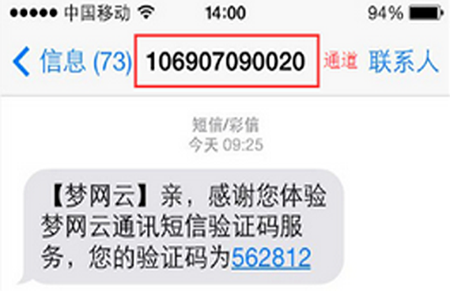
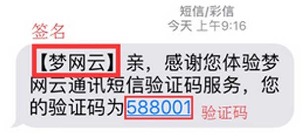

短信通道是由中国移动、联通、电信等运营商直接提供的短信发送接口，实现与客户指定号码进行短信批量发送和自定义发送的目的。图例如下：
短信签名业务是运营商为客户提供一种快捷、方便的个性化签名方式。当客户发送短信时，短信系统会根据客户的设置，在短信内容前面附加个性化签名，再发送给被叫手机客户。图例如下：
在企业、行业的应用中，指发送给通讯服务提供商的短信，主要用于制定某种服务、完成某种查询，或是办理某种业务等。例如：中国移动查询手机余额短信内容是：”CXYE”，然后发送到”10086”；
4.1 测试入口一
在企业、行业的应用中，指通讯服务提供商发送给目标用户的短信，一般情况下目标用户免费接收。例如：中国移动发送给用户的手机充值话费成功的短信；
4.1 测试入口一
指用户通过手机APP或客户端发送请求，向梦网云通讯平台服务器请求对资源的访问。